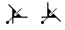

The symbols above show threefold screw axes perpendicular to the
plane of the screen, i.e parallel to Z.
A threefold screw axis is equivalent to an anticlockwise rotation of 120°
about a line followed by a translation parallel to that line.
The translation is either 1/3 or 2/3 of the repeat distance in the lattice
along that direction for three-one and three-two screw axes, respectively.
A threefold rotation about the c-axis, i.e. about
the line 0,0,z, followed by a translation of 1/3 c
along it, will have
the corresponding symmetry operator -y,x-y,1/3+z.
In contrast to a two-one screw axis,
three-one and three-two axes exhibit handedness corresponding to
right-handed and left-handed helices, respectively.
They have the written symbols "31" or
"32", respectively.

In space group diagrams for cubic symmetry,
all the threefold screw axes are inclined
at an angle of 54.736° to the XY plane. The symbol for these are
shown above, the dot indicating the exact position of intersection with
the plane.